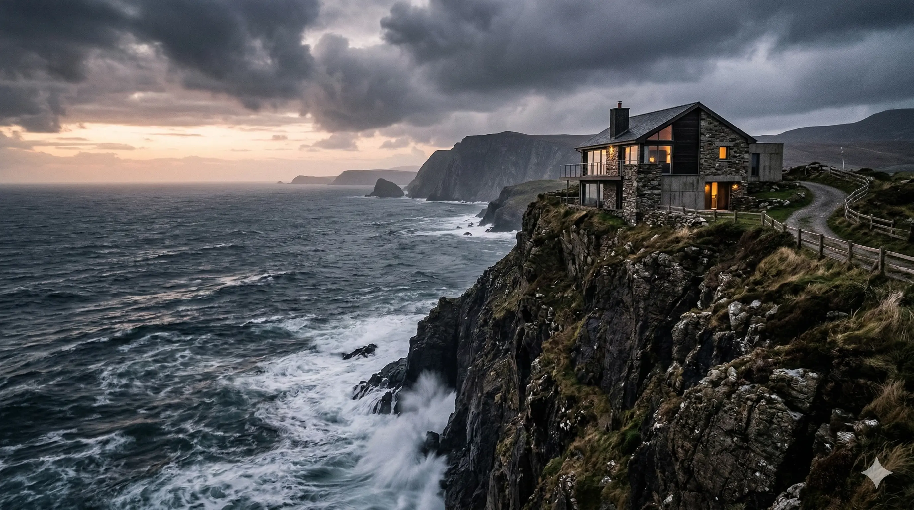
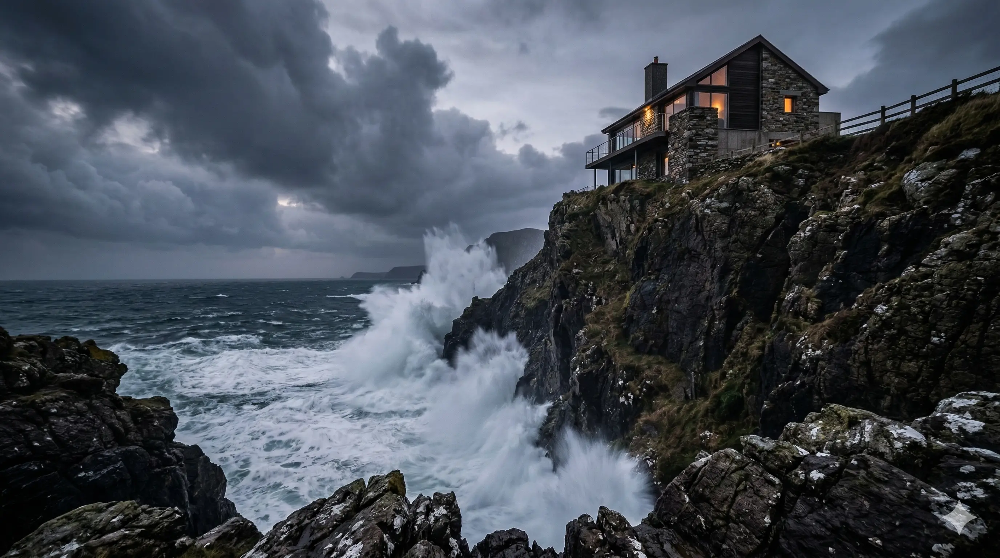
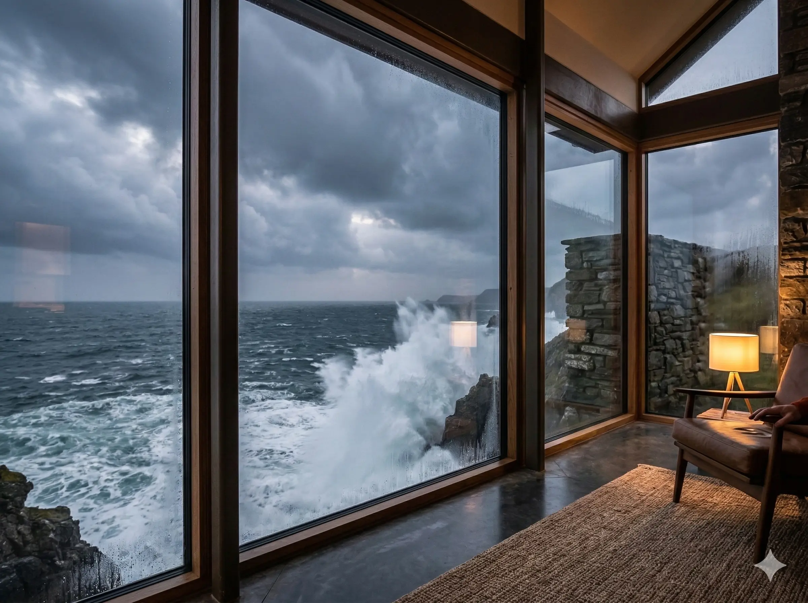
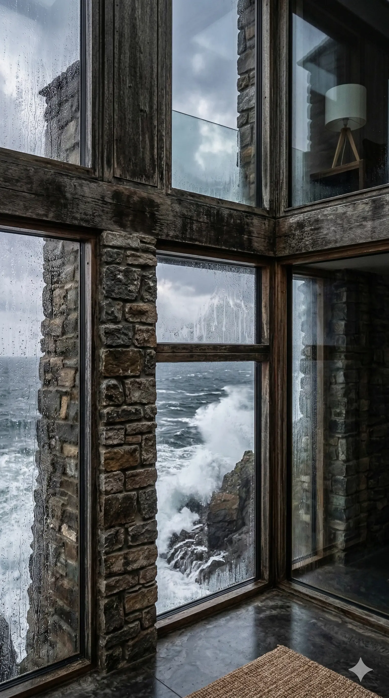

Coastal Retreat
Location: Fictional Coast, NZ · Year: 2021
Overview
A house on a cliff above the ocean, with floor-to-ceiling windows and a terrace that looks out over the water. The interior is oriented toward the view, and the exterior responds to wind and salt with robust materials and simple forms.
Placeholder project for testing. All content is fictional.




Awards
- Coastal Architecture Award (Fake), 2022